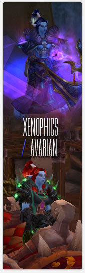
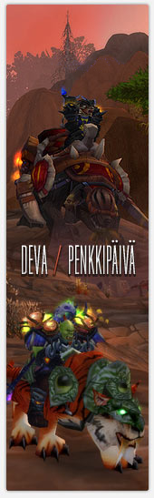
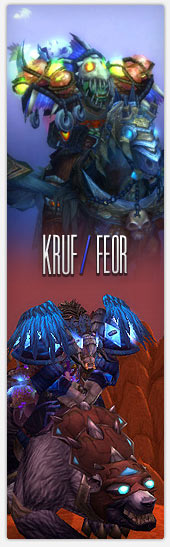

Alts, The Paragon Way (Manaflask Article)
As promised earlier, this is the second part of Starym's Manaflask article series about Paragon and t11 progress. Again thanks to Starym for a quality article.
This is copied from Manaflask, written by Starym:

Some weeks ago we "sat down" with several Paragon members to have a chat about the changing nature of the game in Cataclysm and how the top end raiding scene was quickly becoming an arms race for well-geared alts. Call it what you will, raid-stacking, using optimal classes for encounters, or just having backups of all the important classes, this topic seems vital to understanding the progress race in Cataclysm so far and in the upcoming raiding tier. It was a lengthy (and I must say, very fun) discussion so it'll be split into two parts, and here we go with the first one. Enjoy (and keep in mind this was done roughly a week after progress ended).
Representing Paragon are Xenophics (Shadow Priest), Devai (Hunter), Kruf (Hunter) and, of course, their alts!

It all started with Trial of the Grand Crusader, where they noticed the need for a second team to test the encounters without wasting precious tries. In ICC alts developed into a real strategy which played a big role in the success they had. After that, since there weren't going to be any more shenanigans with limited attempts, they figured they wouldn't really play such a big role anymore. There were two reasons for keeping them around after limited attempts were removed. The main one was to just use the alts to pool gear for mains, so the mains can be split into 2 raids and the alts just fill them out with the purpose of more loot. The second one was, obviously, the possibility that some classes were going to be especially good for some encounters and would be stacked in the main raid. Boy, was that ever right on the money.
Deva: If you notice something is working well for you, like alts in ToC and ICC, why wouldn't you continue doing the same thing?
xenophics: It actually didn't really take up that much time, I mean obviously the leveling itself took some. Gearing up the alts and running the other raid, however, only took around 5 hours per week.
So how does it all actually work? The timing on this was around the second week of release. The first week the mains cleared half the raid content, and did a full clear in the second. After that there was a gap while waiting on heroic modes to unlock and that's when the leveling and gearing happened.
Kruf: The basic setup is that everyone has one official alt that's supposed to be geared up in a reasonable manner. Whatever the "good" class it, we should have a couple of alts for that class.
xenophics: The idea was, you had your level 80 alt from Wrath and we were given a set amount of time to get those to level 85 and Cataclysm heroic blue gear, and if you were ready by then you got DKP (the timing was around the third week).
People were of course asked what their preference was and it turned out that healers chose healers again, melees chose ranged mostly and vice-versa. One of the big things people assume is that we all have 2-3 alts, and that's simply not true, we each have one we actually play. Obviously some people have more, but that's just how they choose to spend their free time and have fun, it's certainly not mandatory. We actually even had two people rerolling their alts to mains during Cataclysm progress, since class balance wasn't that great.
Kruf: The alts are actually assigned, in a manner of speaking. We got to name 3 of our top choices, then the officers went through those and figured out a combination of classes and specs that would make the alt raid able to kill bosses by themselves as well.
xenophics: The people that said they really only wanted to play one class got to play it, almost nobody was forced to play something they didn't want to.
Kruf: Well I only got my third choice so :(
Deva: Some healers rolled Priests for alts, but the class wasn't that good at that time, so they rerolled to Paladins, which were just so overpowered in the beginning, so we kinda got a nice tactic for Al'Akir. We actually practiced it with 7-8 Paladins (but only used 4 on the kill).

You'd think setting up alts would be incredibly time consuming.
Kruf: The whole alt leveling and gearing process wasn't actually bad at all, my alt hit 85 6 days after my main, and I was one of the earlier ones to finish. To be honest this whole Hard mode grind and everything that comes with it only started feeling like a second job like a week before progress ended, until that point it was quite fine.
xenophics: The raids themselves actually are the highpoint for me, I just enjoy playing with the guild so much, and it helps to cope with the time consuming part. The only thing I really can't stand and that gets me down is wiping on a boss that you feel like you can't kill, and there have been some of those in Cata. Like pre-nerf Al'Akir for example, we went there once a week, and half the raid was like „oh come on, let's just go back, just stop the raid, don't make us do this“.
Deva: And it wasn't even playable - like on some older unkillable bosses, where you just went in and everyone was dead after 6 seconds. No one could figure out how the lightning strikes worked, we were just wiping there for hours and got absolutely nothing out of it. It was horrible.
While we were on the topic of Al'Akir we touched a bit on stealth nerfs too (and I used this to my advantage and made them listen to my never ending C'thun stories).
Kruf: The biggest problem with this is that it basically comes down to who notices that something's changed first. It becomes luck dependent. It would be better if they said on forums „ok we hotfixed this a little bit because it was unkillable“.
xenophic: There were even some encounters when we just couldn't be sure if something was intended or not. For example, on Ascendant Council you could interrupt a spell, but it would also lock down the school of the spell and we couldn't tell if that was intended, it was like 50-50. And three weeks after we actually decided to do that they had fixed it so you couldn't do it anymore.
Kruf: The bigger problem for me are fights like Magmaw. I mean you obviously have to kite the big adds since they're slower than players, but kiting in the room isn't really an option, there just isn't enough space. And then you notice there's no gate and you can kite them outside the room, except you can't help but feel it's a questionable tactic so that's really annoying when you don't know if you're supposed to do this or not. We even made a ticket for Magmaw and got an answer that no, we weren't supposed to kite outside the room, so we didn't and then to find out some other guild got the kill because they did was really disappointing.
xenophics: And all these fixes have been a bit bad by Blizzard, for instance Nefarian, they should have just admitted their mistake and just let other guilds have the same advantage and opportunity to use the same tactic we used. It's just unfair this way.
Kruf: To be honest, the whole Nefarian encounter design is just so bad I don't even know what to think of it, it's so broken in so many ways. And the only boss I can really agree to them fixing without any notice would be Sinestra since it was so incredibly broken when we started with it they just had to fix it. There were a few mechanics that were kind of, almost, maybe, perhaps working, the rest was completely wrong.
I doubt they went in with even 10 people and pulled her, on our first pull it was instantly obvious that there was something wrong with the orbs, people were dying and they were nowhere near them.
xenophics: And on Atramedes...I think we have so far killed it with 3 different exploits and it's ridiculous. And they should just have pulled the whole encounter down and fixed it properly, preferably before any guild had manged to kill it. We didn't want another Hodir situation. Each new fix brings new exploits with it, if something is that broken just pull it down and put it back when it's doable normally.
Kruf: And half of these bugs and exploits were already reported during the beta and they didn't do anything about them.
At this point I mentioned the "The Bermuda Triangle of Kill Shots" and that I just found it amazingly hilarious how most guilds „mysteriously forgot“ to take a SS or just couldn't quite seem to get a good angle on their SS, and somehow it all happened around Atramedes and we had quite a laugh.
xenophics: It's mostly important to stack the classes that make the fight easier in the start, when you're still trying the boss out so you can progress through the encounter as much as possible. Then later you can bring in the DPS or the „worse“ classes that bring more stuff to the raid so you can actually kill it, but you have to first spend time focusing on what the fight is all about.

The Sinestra Realm First achievement was bugged for a while, so a GM had to fix it, and they were in their alt raid at the time which made for an interesting SS.
A very real concern is if encounters even can be balanced, with all the variations in the specs, there's basically always SOMETHING some spec brings that is better on a specific fight than others.
Kruf: Well yes, but it's not often that the differences are that incredibly huge, on Nef the dps figures were like 3-4x bigger for some classes, on Al'Akir the difference in damage taken is like 7-8x between the best and the worst class.
xenophics: Yea, I mean on other fights the difference is like 2k dps and while we still want to bring the best class even then, it's not such a catastrophe if we don't.
Kruf: For example when the differences are normal, a main will always outdps the better alt class that has worse gear, it's only on these rare(ish) encounters that the blue geared alt will be better than the full epic main.
The alts and mains aren't really on the same gear level either, the gear is stacked onto their mains whenever possible, and the alt raid just does normal modes. Most of the alts were still a ways off full normal mode epic around the time when progress ended, while most of the mains were almost full hard mode gear. So unless the encounter REALLY favors a specific class it doesn't make any sense to bring alts over mains.
Check out Part 2 (hopefully next week) with even more alt and stacking action.
- Log in to post comments